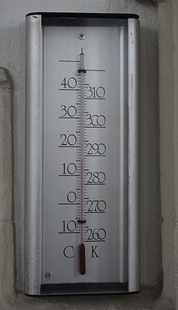

kelvin
Kelvin, yang disimbolkan dengan K, adalah satuan suhu termodinamika dalam SI. Satuan ini didefinisikan dengan memperoleh nilai numerik tetap dari konstanta Boltzmann k sebesar 1,380649×10
−23 bila dinyatakan dalam satuan J⋅K
−1 yang sebanding dengan kg⋅m2⋅s
−2⋅K
−, dengan definisi kilogram, meter, dan detik yang ditentukan berkenaan dengan h, c, dan Δν
Cs.

energi kinetik
Energi kinetik atau energi gerak adalah energi yang dimiliki oleh sebuah benda karena gerakannya.
Energi kinetik sebuah benda didefinisikan sebagai usaha yang dibutuhkan untuk menggerakkan sebuah benda dengan massa tertentu dari keadaan diam hingga mencapai kecepatan tertentu.
Energi kinetik sebuah benda sama dengan jumlah usaha yang diperlukan untuk menyatakan kecepatan dan rotasinya, dimulai dari keadaan diam.